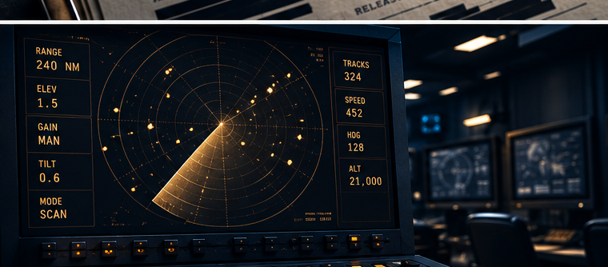

Many pastors are discovering that conversations about UAP and nonhuman intelligence are already happening in their congregations.
Built on doctoral research with twelve Protestant clergy across the United States.
The Companion Course
A Pastor's Guide to Mystery, UAP, and the Questions Your Congregation Is Already Asking
Most seminary training never touched this. You are left improvising a pastoral response in real time, often without a framework for what faithful discernment even looks like here.
This is a training about standing before your people, holding both mystery and ministry in the same hand. Twelve pastors have already walked this ground. Their voices shape everything here.
[Insert a real participant quote here — something from Theme 5, 6, or 7 on reassurance and staying discernment-focused.]
Protestant Pastor · Study Participant

Did seminary prepare you for this?
This training is drawn directly from a PhD dissertation in Psychology (Liberty University), a phenomenological study of twelve Protestant clergy and how they interpret and minister around UAP (commonly known as UFOs) and nonhuman intelligence questions. Findings are being published in peer-reviewed journals, including Pastoral Psychology (Springer) and Theology and Science.
[Insert a real participant quote here — something from Theme 2 or 9 on discernment, deception, or congregational tension.]
Protestant Pastor · Study Participant
Can the Bible easily explain this?
What do you say when they ask if it's real?
Most clergy have no training for this moment. Ministering to Experiencers is built around exactly that gap — a framework for holding space for someone's experience while staying anchored in Scripture, without defaulting to dismissal or unverified affirmation.
I had a member come to me convinced she'd had an encounter. I didn't know if I was supposed to offer comfort, correction, or just listen. Nothing in my training prepared me for that conversation.
Illustrative composite · common pastoral concern
My worry isn't whether something happened to them. It's whether I can walk with them without either dismissing their experience or affirming something I can't verify.
Illustrative composite · common pastoral concern
Creation, discernment, and the deception question.
Reassurance without dismissal.
Walking alongside congregants with encounters of their own.
A practicum to shape your own church's path forward.
This course provides approximately 10 hours of documented professional development based on peer-reviewed doctoral research. A certificate of completion with stated learning objectives and contact hours is provided. CE recognition varies by denomination. Confirmed denominational recognitions will be listed here as they are established. Check your own polity's policy before submitting.
Veteran · Researcher · Pastoral Counselor. Christian Pedersen is a U.S. Air Force veteran and holds a PhD in Psychology (Liberty University) and an MA in Pastoral Counseling. His doctoral research is the foundation for this course, for his forthcoming book A Faith Big Enough for the Cosmos, and for published work in peer-reviewed pastoral psychology and theology and science journals.
Enrollment opens soon.
Enroll Now